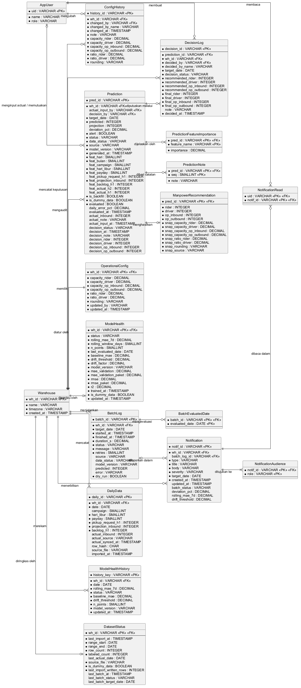
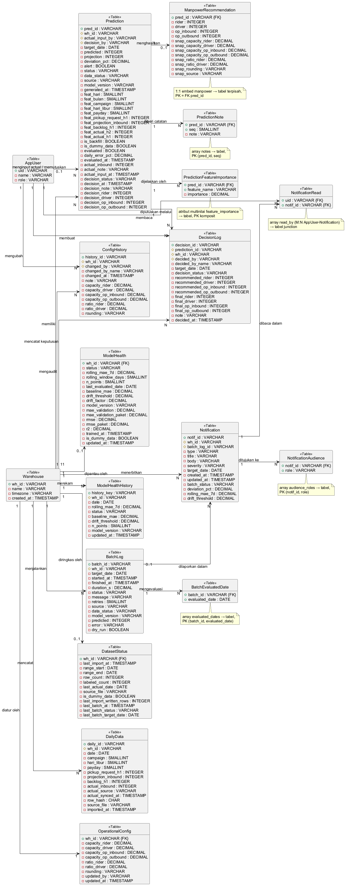
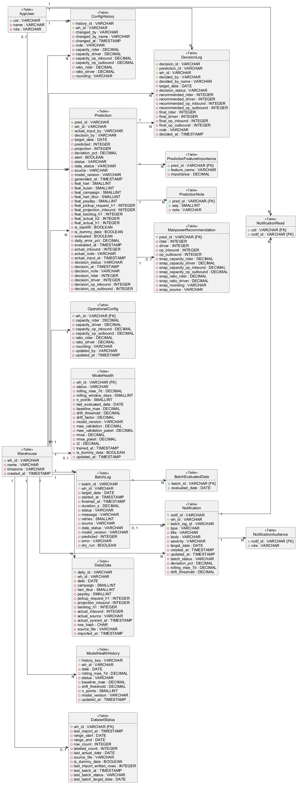

ERD, transformasi ke LRS, LRS final, dan spesifikasi tabel.
| Tabel | Sumber Firestore | Keterangan |
|---|---|---|
| Warehouse | warehouses | Master gudang |
| AppUser | users | Pengguna aplikasi |
| DailyData | daily_data | Data harian hasil impor Excel |
| Prediction | predictions | Prediksi inbound H+1 |
| PredictionNote | predictions.notes | Catatan script per prediksi (atribut multinilai) |
| ManpowerRecommendation | predictions.manpower | Rekomendasi manpower per prediksi (1:1) |
| PredictionFeatureImportance | predictions.feature_importance | Bobot fitur per prediksi (atribut multinilai) |
| OperationalConfig | operational_configs | Konfigurasi kapasitas aktif per gudang |
| ConfigHistory | operational_configs/{wh_id}/history | Riwayat perubahan konfigurasi (append-only) |
| DecisionLog | decision_logs | Keputusan manpower (append-only) |
| ModelHealth | model_health | Kesehatan model terkini per gudang |
| ModelHealthHistory | model_health_history | Riwayat Rolling MAE harian |
| BatchLog | batch_logs | Log eksekusi batch |
| BatchEvaluatedDate | batch_logs.evaluated_dates | Tanggal yang dievaluasi per batch (atribut multinilai) |
| DatasetStatus | dataset_status | Ringkasan dataset per gudang |
| Notification | notifications | Notifikasi dalam aplikasi |
| NotificationAudience | notifications.audience_roles | Role penerima notifikasi (atribut multinilai) |
| NotificationRead | notifications.read_by | Junction M:N AppUser–Notification (status baca) |
Pusat model adalah Warehouse: setiap data operasional terikat ke satu gudang. Prediction dihasilkan script per tanggal dan menjadi induk ManpowerRecommendation (1:0..1), PredictionFeatureImportance, PredictionNote, dan DecisionLog. AppUser membuat keputusan, menginput actual, mengubah konfigurasi, dan membaca notifikasi (M:N lewat NotificationRead). Atribut bertanda * wajib; <<PK>> kunci primer; <<FK>> kunci asing. Catatan: model_health.feature_importance tidak dibuat tabel tersendiri karena sama dengan bobot pada prediksi terbaru (turunan); tidak ada tabel versi model karena model_version hanya berupa label teks di skema.
@startuml erd
skinparam defaultFontName Arial
skinparam shadowing false
hide circle
skinparam linetype ortho
left to right direction
entity Warehouse {
* wh_id : VARCHAR <<PK>>
--
* name : VARCHAR
* timezone : VARCHAR
* created_at : TIMESTAMP
}
entity AppUser {
* uid : VARCHAR <<PK>>
--
* name : VARCHAR
* role : VARCHAR
}
entity DailyData {
* daily_id : VARCHAR <<PK>>
--
* wh_id : VARCHAR <<FK>>
* date : DATE
campaign : SMALLINT
* hari_libur : SMALLINT
* payday : SMALLINT
* pickup_request_h1 : INTEGER
* projection_inbound : INTEGER
* backlog_h1 : INTEGER
actual_inbound : INTEGER
actual_source : VARCHAR
actual_synced_at : TIMESTAMP
row_hash : CHAR
source_file : VARCHAR
imported_at : TIMESTAMP
}
entity Prediction {
* pred_id : VARCHAR <<PK>>
--
* wh_id : VARCHAR <<FK>>
actual_input_by : VARCHAR <<FK>>
decision_by : VARCHAR <<FK>>
* target_date : DATE
* predicted : INTEGER
projection : INTEGER
deviation_pct : DECIMAL
* alert : BOOLEAN
* status : VARCHAR
* data_status : VARCHAR
* source : VARCHAR
* model_version : VARCHAR
* generated_at : TIMESTAMP
* feat_hari : SMALLINT
* feat_bulan : SMALLINT
feat_campaign : SMALLINT
* feat_hari_libur : SMALLINT
* feat_payday : SMALLINT
feat_pickup_request_h1 : INTEGER
* feat_projection_inbound : INTEGER
feat_backlog_h1 : INTEGER
feat_actual_h2 : INTEGER
feat_actual_h1 : INTEGER
* is_backfill : BOOLEAN
* is_dummy_data : BOOLEAN
* evaluated : BOOLEAN
daily_error_pct : DECIMAL
evaluated_at : TIMESTAMP
actual_inbound : INTEGER
actual_note : VARCHAR
actual_input_at : TIMESTAMP
decision_status : VARCHAR
decision_at : TIMESTAMP
decision_note : VARCHAR
decision_rider : INTEGER
decision_driver : INTEGER
decision_op_inbound : INTEGER
decision_op_outbound : INTEGER
}
entity PredictionNote {
* pred_id : VARCHAR <<PK>> <<FK>>
* seq : SMALLINT <<PK>>
--
* note : VARCHAR
}
entity ManpowerRecommendation {
* pred_id : VARCHAR <<PK>> <<FK>>
--
* rider : INTEGER
* driver : INTEGER
* op_inbound : INTEGER
* op_outbound : INTEGER
* snap_capacity_rider : DECIMAL
* snap_capacity_driver : DECIMAL
* snap_capacity_op_inbound : DECIMAL
* snap_capacity_op_outbound : DECIMAL
* snap_ratio_rider : DECIMAL
* snap_ratio_driver : DECIMAL
* snap_rounding : VARCHAR
* snap_source : VARCHAR
}
entity PredictionFeatureImportance {
* pred_id : VARCHAR <<PK>> <<FK>>
* feature_name : VARCHAR <<PK>>
--
* importance : DECIMAL
}
entity OperationalConfig {
* wh_id : VARCHAR <<PK>> <<FK>>
--
* capacity_rider : DECIMAL
* capacity_driver : DECIMAL
* capacity_op_inbound : DECIMAL
* capacity_op_outbound : DECIMAL
* ratio_rider : DECIMAL
* ratio_driver : DECIMAL
* rounding : VARCHAR
* updated_by : VARCHAR
* updated_at : TIMESTAMP
}
entity ConfigHistory {
* history_id : VARCHAR <<PK>>
--
* wh_id : VARCHAR <<FK>>
* changed_by : VARCHAR <<FK>>
* changed_by_name : VARCHAR
* changed_at : TIMESTAMP
* note : VARCHAR
* capacity_rider : DECIMAL
* capacity_driver : DECIMAL
* capacity_op_inbound : DECIMAL
* capacity_op_outbound : DECIMAL
* ratio_rider : DECIMAL
* ratio_driver : DECIMAL
* rounding : VARCHAR
}
entity DecisionLog {
* decision_id : VARCHAR <<PK>>
--
* prediction_id : VARCHAR <<FK>>
* wh_id : VARCHAR <<FK>>
* decided_by : VARCHAR <<FK>>
* decided_by_name : VARCHAR
* target_date : DATE
* decision_status : VARCHAR
* recommended_rider : INTEGER
* recommended_driver : INTEGER
* recommended_op_inbound : INTEGER
* recommended_op_outbound : INTEGER
* final_rider : INTEGER
* final_driver : INTEGER
* final_op_inbound : INTEGER
* final_op_outbound : INTEGER
note : VARCHAR
* decided_at : TIMESTAMP
}
entity ModelHealth {
* wh_id : VARCHAR <<PK>> <<FK>>
--
* status : VARCHAR
* rolling_mae_7d : DECIMAL
* rolling_window_days : SMALLINT
* n_points : SMALLINT
* last_evaluated_date : DATE
* baseline_mae : DECIMAL
* drift_threshold : DECIMAL
* drift_factor : DECIMAL
* model_version : VARCHAR
* mae_validation : DECIMAL
* mae_validation_paket : DECIMAL
* rmse : DECIMAL
* rmse_paket : DECIMAL
* r2 : DECIMAL
* trained_at : TIMESTAMP
* is_dummy_data : BOOLEAN
* updated_at : TIMESTAMP
}
entity ModelHealthHistory {
* history_key : VARCHAR <<PK>>
--
* wh_id : VARCHAR <<FK>>
* date : DATE
* rolling_mae_7d : DECIMAL
* status : VARCHAR
* baseline_mae : DECIMAL
* drift_threshold : DECIMAL
* n_points : SMALLINT
* model_version : VARCHAR
* updated_at : TIMESTAMP
}
entity BatchLog {
* batch_id : VARCHAR <<PK>>
--
* wh_id : VARCHAR <<FK>>
* target_date : DATE
* started_at : TIMESTAMP
* finished_at : TIMESTAMP
* duration_s : DECIMAL
* status : VARCHAR
* message : VARCHAR
* retries : SMALLINT
source : VARCHAR
data_status : VARCHAR
model_version : VARCHAR
predicted : INTEGER
error : VARCHAR
* dry_run : BOOLEAN
}
entity BatchEvaluatedDate {
* batch_id : VARCHAR <<PK>> <<FK>>
* evaluated_date : DATE <<PK>>
--
}
entity DatasetStatus {
* wh_id : VARCHAR <<PK>> <<FK>>
--
* last_import_at : TIMESTAMP
* range_start : DATE
* range_end : DATE
* row_count : INTEGER
* labeled_count : INTEGER
last_actual_date : DATE
* source_file : VARCHAR
* is_dummy_data : BOOLEAN
* last_import_written_rows : INTEGER
last_batch_at : TIMESTAMP
last_batch_status : VARCHAR
last_batch_target_date : DATE
}
entity Notification {
* notif_id : VARCHAR <<PK>>
--
* wh_id : VARCHAR <<FK>>
batch_log_id : VARCHAR <<FK>>
* type : VARCHAR
* title : VARCHAR
* body : VARCHAR
* severity : VARCHAR
* target_date : DATE
* created_at : TIMESTAMP
updated_at : TIMESTAMP
batch_status : VARCHAR
deviation_pct : DECIMAL
rolling_mae_7d : DECIMAL
drift_threshold : DECIMAL
}
entity NotificationAudience {
* notif_id : VARCHAR <<PK>> <<FK>>
* role : VARCHAR <<PK>>
--
}
entity NotificationRead {
* uid : VARCHAR <<PK>> <<FK>>
* notif_id : VARCHAR <<PK>> <<FK>>
--
}
Warehouse ||--o{ DailyData : mencatat
Warehouse ||--o{ Prediction : memiliki
Warehouse ||--|| OperationalConfig : diatur oleh
Warehouse ||--o| ModelHealth : dipantau oleh
Warehouse ||--o{ ModelHealthHistory : merekam
Warehouse ||--o{ BatchLog : menjalankan
Warehouse ||--o| DatasetStatus : diringkas oleh
Warehouse ||--o{ Notification : menerbitkan
Warehouse ||--o{ ConfigHistory : mengaudit
Warehouse ||--o{ DecisionLog : mencatat keputusan
Prediction ||--o| ManpowerRecommendation : menghasilkan
Prediction ||--o{ PredictionFeatureImportance : dijelaskan oleh
Prediction ||--o{ PredictionNote : diberi catatan
Prediction ||--o{ DecisionLog : diputuskan melalui
AppUser ||--o{ DecisionLog : membuat
AppUser |o--o{ Prediction : menginput actual / memutuskan
AppUser ||--o{ ConfigHistory : mengubah
BatchLog ||--o{ BatchEvaluatedDate : mengevaluasi
BatchLog |o--o{ Notification : dilaporkan dalam
Notification ||--|{ NotificationAudience : ditujukan ke
AppUser ||--o{ NotificationRead : membaca
Notification ||--o{ NotificationRead : dibaca dalam
@enduml

| Kasus | Keputusan transformasi | Tabel hasil |
|---|---|---|
| 1:1 Warehouse–OperationalConfig, Warehouse–ModelHealth, Warehouse–DatasetStatus | PK tabel anak = FK wh_id (sesuai ID dokumen {wh}). | OperationalConfig, ModelHealth, DatasetStatus |
1:0..1 Prediction–ManpowerRecommendation (embed manpower) | Dipisah menjadi tabel dengan PK sekaligus FK pred_id; config_snapshot diratakan menjadi kolom snap_*. | ManpowerRecommendation |
| 1:N di sisi many | FK diletakkan di tabel sisi many: wh_id, prediction_id, decided_by, decision_by, changed_by, actual_input_by, batch_log_id (opsional). updated_by dan actual_input_by dapat berisi nilai non-uid (wipas-research:seed-config, backfill:excel) sehingga hanya actual_input_by yang diberi FK opsional. | DailyData, Prediction, DecisionLog, ConfigHistory, BatchLog, ModelHealthHistory, Notification |
Atribut multinilai feature_importance | Tabel terpisah, PK komposit (pred_id, feature_name). | PredictionFeatureImportance |
Atribut multinilai audience_roles | Tabel terpisah, PK komposit (notif_id, role). | NotificationAudience |
Atribut multinilai notes (prediksi) dan evaluated_dates (batch) | Tabel terpisah, PK komposit (pred_id, seq) dan (batch_id, evaluated_date). dataset_status.target_dates/missing_dates tidak dibuat tabel karena dapat diturunkan dari DailyData. | PredictionNote, BatchEvaluatedDate |
M:N AppUser–Notification (array read_by) | Tabel junction dengan PK komposit (uid, notif_id). | NotificationRead |
Map input_features (1:1, ukuran tetap) | Diratakan menjadi kolom feat_* di Prediction (tidak perlu tabel). | Prediction |
Map recommended/final pada keputusan, decision_manpower pada prediksi, salinan konfigurasi pada history | Diratakan menjadi kolom recommended_*, final_*, decision_*, dan kolom kapasitas/rasio di ConfigHistory. | DecisionLog, Prediction, ConfigHistory |
Notasi: + PK, # FK, - atribut; {FK} pada PK menandai PK yang juga FK.
@startuml lrs_transformasi
skinparam defaultFontName Arial
skinparam shadowing false
hide circle
hide methods
skinparam linetype ortho
left to right direction
class Warehouse <<Table>> {
+ wh_id : VARCHAR
- name : VARCHAR
- timezone : VARCHAR
- created_at : TIMESTAMP
}
class AppUser <<Table>> {
+ uid : VARCHAR
- name : VARCHAR
- role : VARCHAR
}
class DailyData <<Table>> {
+ daily_id : VARCHAR
# wh_id : VARCHAR
- date : DATE
- campaign : SMALLINT
- hari_libur : SMALLINT
- payday : SMALLINT
- pickup_request_h1 : INTEGER
- projection_inbound : INTEGER
- backlog_h1 : INTEGER
- actual_inbound : INTEGER
- actual_source : VARCHAR
- actual_synced_at : TIMESTAMP
- row_hash : CHAR
- source_file : VARCHAR
- imported_at : TIMESTAMP
}
class Prediction <<Table>> {
+ pred_id : VARCHAR
# wh_id : VARCHAR
# actual_input_by : VARCHAR
# decision_by : VARCHAR
- target_date : DATE
- predicted : INTEGER
- projection : INTEGER
- deviation_pct : DECIMAL
- alert : BOOLEAN
- status : VARCHAR
- data_status : VARCHAR
- source : VARCHAR
- model_version : VARCHAR
- generated_at : TIMESTAMP
- feat_hari : SMALLINT
- feat_bulan : SMALLINT
- feat_campaign : SMALLINT
- feat_hari_libur : SMALLINT
- feat_payday : SMALLINT
- feat_pickup_request_h1 : INTEGER
- feat_projection_inbound : INTEGER
- feat_backlog_h1 : INTEGER
- feat_actual_h2 : INTEGER
- feat_actual_h1 : INTEGER
- is_backfill : BOOLEAN
- is_dummy_data : BOOLEAN
- evaluated : BOOLEAN
- daily_error_pct : DECIMAL
- evaluated_at : TIMESTAMP
- actual_inbound : INTEGER
- actual_note : VARCHAR
- actual_input_at : TIMESTAMP
- decision_status : VARCHAR
- decision_at : TIMESTAMP
- decision_note : VARCHAR
- decision_rider : INTEGER
- decision_driver : INTEGER
- decision_op_inbound : INTEGER
- decision_op_outbound : INTEGER
}
class PredictionNote <<Table>> {
+ pred_id : VARCHAR {FK}
+ seq : SMALLINT
- note : VARCHAR
}
class ManpowerRecommendation <<Table>> {
+ pred_id : VARCHAR {FK}
- rider : INTEGER
- driver : INTEGER
- op_inbound : INTEGER
- op_outbound : INTEGER
- snap_capacity_rider : DECIMAL
- snap_capacity_driver : DECIMAL
- snap_capacity_op_inbound : DECIMAL
- snap_capacity_op_outbound : DECIMAL
- snap_ratio_rider : DECIMAL
- snap_ratio_driver : DECIMAL
- snap_rounding : VARCHAR
- snap_source : VARCHAR
}
class PredictionFeatureImportance <<Table>> {
+ pred_id : VARCHAR {FK}
+ feature_name : VARCHAR
- importance : DECIMAL
}
class OperationalConfig <<Table>> {
+ wh_id : VARCHAR {FK}
- capacity_rider : DECIMAL
- capacity_driver : DECIMAL
- capacity_op_inbound : DECIMAL
- capacity_op_outbound : DECIMAL
- ratio_rider : DECIMAL
- ratio_driver : DECIMAL
- rounding : VARCHAR
- updated_by : VARCHAR
- updated_at : TIMESTAMP
}
class ConfigHistory <<Table>> {
+ history_id : VARCHAR
# wh_id : VARCHAR
# changed_by : VARCHAR
- changed_by_name : VARCHAR
- changed_at : TIMESTAMP
- note : VARCHAR
- capacity_rider : DECIMAL
- capacity_driver : DECIMAL
- capacity_op_inbound : DECIMAL
- capacity_op_outbound : DECIMAL
- ratio_rider : DECIMAL
- ratio_driver : DECIMAL
- rounding : VARCHAR
}
class DecisionLog <<Table>> {
+ decision_id : VARCHAR
# prediction_id : VARCHAR
# wh_id : VARCHAR
# decided_by : VARCHAR
- decided_by_name : VARCHAR
- target_date : DATE
- decision_status : VARCHAR
- recommended_rider : INTEGER
- recommended_driver : INTEGER
- recommended_op_inbound : INTEGER
- recommended_op_outbound : INTEGER
- final_rider : INTEGER
- final_driver : INTEGER
- final_op_inbound : INTEGER
- final_op_outbound : INTEGER
- note : VARCHAR
- decided_at : TIMESTAMP
}
class ModelHealth <<Table>> {
+ wh_id : VARCHAR {FK}
- status : VARCHAR
- rolling_mae_7d : DECIMAL
- rolling_window_days : SMALLINT
- n_points : SMALLINT
- last_evaluated_date : DATE
- baseline_mae : DECIMAL
- drift_threshold : DECIMAL
- drift_factor : DECIMAL
- model_version : VARCHAR
- mae_validation : DECIMAL
- mae_validation_paket : DECIMAL
- rmse : DECIMAL
- rmse_paket : DECIMAL
- r2 : DECIMAL
- trained_at : TIMESTAMP
- is_dummy_data : BOOLEAN
- updated_at : TIMESTAMP
}
class ModelHealthHistory <<Table>> {
+ history_key : VARCHAR
# wh_id : VARCHAR
- date : DATE
- rolling_mae_7d : DECIMAL
- status : VARCHAR
- baseline_mae : DECIMAL
- drift_threshold : DECIMAL
- n_points : SMALLINT
- model_version : VARCHAR
- updated_at : TIMESTAMP
}
class BatchLog <<Table>> {
+ batch_id : VARCHAR
# wh_id : VARCHAR
- target_date : DATE
- started_at : TIMESTAMP
- finished_at : TIMESTAMP
- duration_s : DECIMAL
- status : VARCHAR
- message : VARCHAR
- retries : SMALLINT
- source : VARCHAR
- data_status : VARCHAR
- model_version : VARCHAR
- predicted : INTEGER
- error : VARCHAR
- dry_run : BOOLEAN
}
class BatchEvaluatedDate <<Table>> {
+ batch_id : VARCHAR {FK}
+ evaluated_date : DATE
}
class DatasetStatus <<Table>> {
+ wh_id : VARCHAR {FK}
- last_import_at : TIMESTAMP
- range_start : DATE
- range_end : DATE
- row_count : INTEGER
- labeled_count : INTEGER
- last_actual_date : DATE
- source_file : VARCHAR
- is_dummy_data : BOOLEAN
- last_import_written_rows : INTEGER
- last_batch_at : TIMESTAMP
- last_batch_status : VARCHAR
- last_batch_target_date : DATE
}
class Notification <<Table>> {
+ notif_id : VARCHAR
# wh_id : VARCHAR
# batch_log_id : VARCHAR
- type : VARCHAR
- title : VARCHAR
- body : VARCHAR
- severity : VARCHAR
- target_date : DATE
- created_at : TIMESTAMP
- updated_at : TIMESTAMP
- batch_status : VARCHAR
- deviation_pct : DECIMAL
- rolling_mae_7d : DECIMAL
- drift_threshold : DECIMAL
}
class NotificationAudience <<Table>> {
+ notif_id : VARCHAR {FK}
+ role : VARCHAR
}
class NotificationRead <<Table>> {
+ uid : VARCHAR {FK}
+ notif_id : VARCHAR {FK}
}
Warehouse "1" --> "N" DailyData : mencatat
Warehouse "1" --> "N" Prediction : memiliki
Warehouse "1" --> "1" OperationalConfig : diatur oleh
Warehouse "1" --> "0..1" ModelHealth : dipantau oleh
Warehouse "1" --> "N" ModelHealthHistory : merekam
Warehouse "1" --> "N" BatchLog : menjalankan
Warehouse "1" --> "0..1" DatasetStatus : diringkas oleh
Warehouse "1" --> "N" Notification : menerbitkan
Warehouse "1" --> "N" ConfigHistory : mengaudit
Warehouse "1" --> "N" DecisionLog : mencatat keputusan
Prediction "1" --> "0..1" ManpowerRecommendation : menghasilkan
Prediction "1" --> "N" PredictionFeatureImportance : dijelaskan oleh
Prediction "1" --> "N" PredictionNote : diberi catatan
Prediction "1" --> "N" DecisionLog : diputuskan melalui
AppUser "1" --> "N" DecisionLog : membuat
AppUser "0..1" --> "N" Prediction : menginput actual / memutuskan
AppUser "1" --> "N" ConfigHistory : mengubah
BatchLog "1" --> "N" BatchEvaluatedDate : mengevaluasi
BatchLog "0..1" --> "N" Notification : dilaporkan dalam
Notification "1" --> "N" NotificationAudience : ditujukan ke
AppUser "1" --> "N" NotificationRead : membaca
Notification "1" --> "N" NotificationRead : dibaca dalam
note bottom of ManpowerRecommendation
1:1 embed manpower → tabel terpisah,
PK = FK pred_id
end note
note bottom of PredictionNote
array notes → tabel,
PK (pred_id, seq)
end note
note bottom of BatchEvaluatedDate
array evaluated_dates → tabel,
PK (batch_id, evaluated_date)
end note
note bottom of PredictionFeatureImportance
atribut multinilai feature_importance
→ tabel, PK komposit
end note
note bottom of NotificationAudience
array audience_roles → tabel,
PK (notif_id, role)
end note
note bottom of NotificationRead
array read_by (M:N AppUser–Notification)
→ tabel junction
end note
@enduml

@startuml lrs_final
skinparam defaultFontName Arial
skinparam shadowing false
hide circle
hide methods
skinparam linetype ortho
left to right direction
class Warehouse <<Table>> {
+ wh_id : VARCHAR
- name : VARCHAR
- timezone : VARCHAR
- created_at : TIMESTAMP
}
class AppUser <<Table>> {
+ uid : VARCHAR
- name : VARCHAR
- role : VARCHAR
}
class DailyData <<Table>> {
+ daily_id : VARCHAR
# wh_id : VARCHAR
- date : DATE
- campaign : SMALLINT
- hari_libur : SMALLINT
- payday : SMALLINT
- pickup_request_h1 : INTEGER
- projection_inbound : INTEGER
- backlog_h1 : INTEGER
- actual_inbound : INTEGER
- actual_source : VARCHAR
- actual_synced_at : TIMESTAMP
- row_hash : CHAR
- source_file : VARCHAR
- imported_at : TIMESTAMP
}
class Prediction <<Table>> {
+ pred_id : VARCHAR
# wh_id : VARCHAR
# actual_input_by : VARCHAR
# decision_by : VARCHAR
- target_date : DATE
- predicted : INTEGER
- projection : INTEGER
- deviation_pct : DECIMAL
- alert : BOOLEAN
- status : VARCHAR
- data_status : VARCHAR
- source : VARCHAR
- model_version : VARCHAR
- generated_at : TIMESTAMP
- feat_hari : SMALLINT
- feat_bulan : SMALLINT
- feat_campaign : SMALLINT
- feat_hari_libur : SMALLINT
- feat_payday : SMALLINT
- feat_pickup_request_h1 : INTEGER
- feat_projection_inbound : INTEGER
- feat_backlog_h1 : INTEGER
- feat_actual_h2 : INTEGER
- feat_actual_h1 : INTEGER
- is_backfill : BOOLEAN
- is_dummy_data : BOOLEAN
- evaluated : BOOLEAN
- daily_error_pct : DECIMAL
- evaluated_at : TIMESTAMP
- actual_inbound : INTEGER
- actual_note : VARCHAR
- actual_input_at : TIMESTAMP
- decision_status : VARCHAR
- decision_at : TIMESTAMP
- decision_note : VARCHAR
- decision_rider : INTEGER
- decision_driver : INTEGER
- decision_op_inbound : INTEGER
- decision_op_outbound : INTEGER
}
class PredictionNote <<Table>> {
+ pred_id : VARCHAR {FK}
+ seq : SMALLINT
- note : VARCHAR
}
class ManpowerRecommendation <<Table>> {
+ pred_id : VARCHAR {FK}
- rider : INTEGER
- driver : INTEGER
- op_inbound : INTEGER
- op_outbound : INTEGER
- snap_capacity_rider : DECIMAL
- snap_capacity_driver : DECIMAL
- snap_capacity_op_inbound : DECIMAL
- snap_capacity_op_outbound : DECIMAL
- snap_ratio_rider : DECIMAL
- snap_ratio_driver : DECIMAL
- snap_rounding : VARCHAR
- snap_source : VARCHAR
}
class PredictionFeatureImportance <<Table>> {
+ pred_id : VARCHAR {FK}
+ feature_name : VARCHAR
- importance : DECIMAL
}
class OperationalConfig <<Table>> {
+ wh_id : VARCHAR {FK}
- capacity_rider : DECIMAL
- capacity_driver : DECIMAL
- capacity_op_inbound : DECIMAL
- capacity_op_outbound : DECIMAL
- ratio_rider : DECIMAL
- ratio_driver : DECIMAL
- rounding : VARCHAR
- updated_by : VARCHAR
- updated_at : TIMESTAMP
}
class ConfigHistory <<Table>> {
+ history_id : VARCHAR
# wh_id : VARCHAR
# changed_by : VARCHAR
- changed_by_name : VARCHAR
- changed_at : TIMESTAMP
- note : VARCHAR
- capacity_rider : DECIMAL
- capacity_driver : DECIMAL
- capacity_op_inbound : DECIMAL
- capacity_op_outbound : DECIMAL
- ratio_rider : DECIMAL
- ratio_driver : DECIMAL
- rounding : VARCHAR
}
class DecisionLog <<Table>> {
+ decision_id : VARCHAR
# prediction_id : VARCHAR
# wh_id : VARCHAR
# decided_by : VARCHAR
- decided_by_name : VARCHAR
- target_date : DATE
- decision_status : VARCHAR
- recommended_rider : INTEGER
- recommended_driver : INTEGER
- recommended_op_inbound : INTEGER
- recommended_op_outbound : INTEGER
- final_rider : INTEGER
- final_driver : INTEGER
- final_op_inbound : INTEGER
- final_op_outbound : INTEGER
- note : VARCHAR
- decided_at : TIMESTAMP
}
class ModelHealth <<Table>> {
+ wh_id : VARCHAR {FK}
- status : VARCHAR
- rolling_mae_7d : DECIMAL
- rolling_window_days : SMALLINT
- n_points : SMALLINT
- last_evaluated_date : DATE
- baseline_mae : DECIMAL
- drift_threshold : DECIMAL
- drift_factor : DECIMAL
- model_version : VARCHAR
- mae_validation : DECIMAL
- mae_validation_paket : DECIMAL
- rmse : DECIMAL
- rmse_paket : DECIMAL
- r2 : DECIMAL
- trained_at : TIMESTAMP
- is_dummy_data : BOOLEAN
- updated_at : TIMESTAMP
}
class ModelHealthHistory <<Table>> {
+ history_key : VARCHAR
# wh_id : VARCHAR
- date : DATE
- rolling_mae_7d : DECIMAL
- status : VARCHAR
- baseline_mae : DECIMAL
- drift_threshold : DECIMAL
- n_points : SMALLINT
- model_version : VARCHAR
- updated_at : TIMESTAMP
}
class BatchLog <<Table>> {
+ batch_id : VARCHAR
# wh_id : VARCHAR
- target_date : DATE
- started_at : TIMESTAMP
- finished_at : TIMESTAMP
- duration_s : DECIMAL
- status : VARCHAR
- message : VARCHAR
- retries : SMALLINT
- source : VARCHAR
- data_status : VARCHAR
- model_version : VARCHAR
- predicted : INTEGER
- error : VARCHAR
- dry_run : BOOLEAN
}
class BatchEvaluatedDate <<Table>> {
+ batch_id : VARCHAR {FK}
+ evaluated_date : DATE
}
class DatasetStatus <<Table>> {
+ wh_id : VARCHAR {FK}
- last_import_at : TIMESTAMP
- range_start : DATE
- range_end : DATE
- row_count : INTEGER
- labeled_count : INTEGER
- last_actual_date : DATE
- source_file : VARCHAR
- is_dummy_data : BOOLEAN
- last_import_written_rows : INTEGER
- last_batch_at : TIMESTAMP
- last_batch_status : VARCHAR
- last_batch_target_date : DATE
}
class Notification <<Table>> {
+ notif_id : VARCHAR
# wh_id : VARCHAR
# batch_log_id : VARCHAR
- type : VARCHAR
- title : VARCHAR
- body : VARCHAR
- severity : VARCHAR
- target_date : DATE
- created_at : TIMESTAMP
- updated_at : TIMESTAMP
- batch_status : VARCHAR
- deviation_pct : DECIMAL
- rolling_mae_7d : DECIMAL
- drift_threshold : DECIMAL
}
class NotificationAudience <<Table>> {
+ notif_id : VARCHAR {FK}
+ role : VARCHAR
}
class NotificationRead <<Table>> {
+ uid : VARCHAR {FK}
+ notif_id : VARCHAR {FK}
}
Warehouse "1" --> "N" DailyData
Warehouse "1" --> "N" Prediction
Warehouse "1" --> "1" OperationalConfig
Warehouse "1" --> "0..1" ModelHealth
Warehouse "1" --> "N" ModelHealthHistory
Warehouse "1" --> "N" BatchLog
Warehouse "1" --> "0..1" DatasetStatus
Warehouse "1" --> "N" Notification
Warehouse "1" --> "N" ConfigHistory
Warehouse "1" --> "N" DecisionLog
Prediction "1" --> "0..1" ManpowerRecommendation
Prediction "1" --> "N" PredictionFeatureImportance
Prediction "1" --> "N" PredictionNote
Prediction "1" --> "N" DecisionLog
AppUser "1" --> "N" DecisionLog
AppUser "0..1" --> "N" Prediction
AppUser "1" --> "N" ConfigHistory
BatchLog "1" --> "N" BatchEvaluatedDate
BatchLog "0..1" --> "N" Notification
Notification "1" --> "N" NotificationAudience
AppUser "1" --> "N" NotificationRead
Notification "1" --> "N" NotificationRead
@enduml

Master gudang — sumber warehouses.
| No | Nama Field | Tipe Data | Ukuran/Presisi | PK | FK (Tabel.Field) | Null/Not Null | Default | Deskripsi |
|---|---|---|---|---|---|---|---|---|
| 1 | wh_id | VARCHAR | 20 | Ya | Not Null | — | Kode gudang, mis. WH-CKG-01 (= code) | |
| 2 | name | VARCHAR | 100 | Not Null | — | Nama gudang | ||
| 3 | timezone | VARCHAR | 40 | Not Null | 'Asia/Jakarta' | Zona waktu | ||
| 4 | created_at | TIMESTAMP | — | Not Null | — | Waktu seed |
Pengguna aplikasi — sumber users.
| No | Nama Field | Tipe Data | Ukuran/Presisi | PK | FK (Tabel.Field) | Null/Not Null | Default | Deskripsi |
|---|---|---|---|---|---|---|---|---|
| 1 | uid | VARCHAR | 128 | Ya | Not Null | — | UID Firebase Auth | |
| 2 | name | VARCHAR | 100 | Not Null | — | Nama tampil | ||
| 3 | role | VARCHAR | 12 | Not Null | — | admin/manager/supervisor/viewer |
Data harian hasil impor Excel — sumber daily_data.
| No | Nama Field | Tipe Data | Ukuran/Presisi | PK | FK (Tabel.Field) | Null/Not Null | Default | Deskripsi |
|---|---|---|---|---|---|---|---|---|
| 1 | daily_id | VARCHAR | 40 | Ya | Not Null | — | {wh_id}_{YYYYMMDD} | |
| 2 | wh_id | VARCHAR | 20 | Warehouse.wh_id | Not Null | — | Gudang | |
| 3 | date | DATE | — | Not Null | — | Tanggal (Asia/Jakarta) | ||
| 4 | campaign | SMALLINT | — | Null | — | 0/1 | ||
| 5 | hari_libur | SMALLINT | — | Not Null | — | 0/1 | ||
| 6 | payday | SMALLINT | — | Not Null | — | 0/1 | ||
| 7 | pickup_request_h1 | INTEGER | — | Not Null | — | Pickup request H-1 | ||
| 8 | projection_inbound | INTEGER | — | Not Null | — | Projection Tim DI | ||
| 9 | backlog_h1 | INTEGER | — | Not Null | — | Backlog H-1 | ||
| 10 | actual_inbound | INTEGER | — | Null | — | Actual | ||
| 11 | actual_source | VARCHAR | 10 | Null | — | excel/app | ||
| 12 | actual_synced_at | TIMESTAMP | — | Null | — | Saat disalin dari aplikasi | ||
| 13 | row_hash | CHAR | 40 | Null | — | SHA-1 baris Excel | ||
| 14 | source_file | VARCHAR | 150 | Null | — | Berkas Excel | ||
| 15 | imported_at | TIMESTAMP | — | Null | — | Waktu impor |
Prediksi inbound H+1 — sumber predictions.
| No | Nama Field | Tipe Data | Ukuran/Presisi | PK | FK (Tabel.Field) | Null/Not Null | Default | Deskripsi |
|---|---|---|---|---|---|---|---|---|
| 1 | pred_id | VARCHAR | 40 | Ya | Not Null | — | pred_{wh_id}_{YYYYMMDD} | |
| 2 | wh_id | VARCHAR | 20 | Warehouse.wh_id | Not Null | — | Gudang | |
| 3 | actual_input_by | VARCHAR | 128 | AppUser.uid | Null | — | Penginput actual (backfill: tanpa FK) | |
| 4 | decision_by | VARCHAR | 128 | AppUser.uid | Null | — | Pengambil keputusan | |
| 5 | target_date | DATE | — | Not Null | — | Tanggal target | ||
| 6 | predicted | INTEGER | — | Not Null | — | Prediksi (paket) | ||
| 7 | projection | INTEGER | — | Null | — | Projection Tim DI | ||
| 8 | deviation_pct | DECIMAL | 7,2 | Null | — | Deviasi (%) | ||
| 9 | alert | BOOLEAN | — | Not Null | FALSE | |deviasi| > 15% | ||
| 10 | status | VARCHAR | 20 | Not Null | — | Normal/Perlu Perhatian | ||
| 11 | data_status | VARCHAR | 30 | Not Null | 'complete' | complete/incomplete_fallback_h2 | ||
| 12 | source | VARCHAR | 5 | Not Null | 'H-1' | H-1/H-2 | ||
| 13 | model_version | VARCHAR | 20 | Not Null | — | Versi model | ||
| 14 | generated_at | TIMESTAMP | — | Not Null | — | Waktu batch | ||
| 15 | feat_hari | SMALLINT | — | Not Null | — | 0 = Senin | ||
| 16 | feat_bulan | SMALLINT | — | Not Null | — | Bulan | ||
| 17 | feat_campaign | SMALLINT | — | Null | — | 0/1 | ||
| 18 | feat_hari_libur | SMALLINT | — | Not Null | — | 0/1 | ||
| 19 | feat_payday | SMALLINT | — | Not Null | — | 0/1 | ||
| 20 | feat_pickup_request_h1 | INTEGER | — | Null | — | Fitur pickup H-1 | ||
| 21 | feat_projection_inbound | INTEGER | — | Not Null | — | Fitur projection | ||
| 22 | feat_backlog_h1 | INTEGER | — | Null | — | Fitur backlog H-1 | ||
| 23 | feat_actual_h2 | INTEGER | — | Null | — | Fitur actual H-2 | ||
| 24 | feat_actual_h1 | INTEGER | — | Null | — | Fitur actual H-1 | ||
| 25 | is_backfill | BOOLEAN | — | Not Null | FALSE | Prediksi backfill | ||
| 26 | is_dummy_data | BOOLEAN | — | Not Null | FALSE | Data dummy | ||
| 27 | evaluated | BOOLEAN | — | Not Null | FALSE | Sudah dievaluasi | ||
| 28 | daily_error_pct | DECIMAL | 7,2 | Null | — | Error harian (%) | ||
| 29 | evaluated_at | TIMESTAMP | — | Null | — | Waktu evaluasi | ||
| 30 | actual_inbound | INTEGER | — | Null | — | Actual (≥ 0) | ||
| 31 | actual_note | VARCHAR | 500 | Null | — | Catatan actual | ||
| 32 | actual_input_at | TIMESTAMP | — | Null | — | Waktu input actual | ||
| 33 | decision_status | VARCHAR | 10 | Null | — | approved/adjusted | ||
| 34 | decision_at | TIMESTAMP | — | Null | — | Waktu keputusan | ||
| 35 | decision_note | VARCHAR | 500 | Null | — | Alasan | ||
| 36 | decision_rider | INTEGER | — | Null | — | Final rider | ||
| 37 | decision_driver | INTEGER | — | Null | — | Final driver | ||
| 38 | decision_op_inbound | INTEGER | — | Null | — | Final op_inbound | ||
| 39 | decision_op_outbound | INTEGER | — | Null | — | Final op_outbound |
Catatan script per prediksi (atribut multinilai) — sumber predictions.notes.
| No | Nama Field | Tipe Data | Ukuran/Presisi | PK | FK (Tabel.Field) | Null/Not Null | Default | Deskripsi |
|---|---|---|---|---|---|---|---|---|
| 1 | pred_id | VARCHAR | 40 | Ya | Prediction.pred_id | Not Null | — | Prediksi |
| 2 | seq | SMALLINT | — | Ya | Not Null | — | Urutan catatan | |
| 3 | note | VARCHAR | 300 | Not Null | — | Isi catatan |
Rekomendasi manpower per prediksi (1:1) — sumber predictions.manpower.
| No | Nama Field | Tipe Data | Ukuran/Presisi | PK | FK (Tabel.Field) | Null/Not Null | Default | Deskripsi |
|---|---|---|---|---|---|---|---|---|
| 1 | pred_id | VARCHAR | 40 | Ya | Prediction.pred_id | Not Null | — | Prediksi pemilik |
| 2 | rider | INTEGER | — | Not Null | — | Jumlah (ceil) rider | ||
| 3 | driver | INTEGER | — | Not Null | — | Jumlah (ceil) driver | ||
| 4 | op_inbound | INTEGER | — | Not Null | — | Jumlah (ceil) op_inbound | ||
| 5 | op_outbound | INTEGER | — | Not Null | — | Jumlah (ceil) op_outbound | ||
| 6 | snap_capacity_rider | DECIMAL | 8,2 | Not Null | — | Snapshot kapasitas Rider | ||
| 7 | snap_capacity_driver | DECIMAL | 8,2 | Not Null | — | Snapshot kapasitas Driver | ||
| 8 | snap_capacity_op_inbound | DECIMAL | 8,2 | Not Null | — | Snapshot kapasitas Op. Inbound | ||
| 9 | snap_capacity_op_outbound | DECIMAL | 8,2 | Not Null | — | Snapshot kapasitas Op. Outbound | ||
| 10 | snap_ratio_rider | DECIMAL | 4,3 | Not Null | — | Snapshot rasio Rider | ||
| 11 | snap_ratio_driver | DECIMAL | 4,3 | Not Null | — | Snapshot rasio Driver | ||
| 12 | snap_rounding | VARCHAR | 10 | Not Null | 'ceil' | Pembulatan | ||
| 13 | snap_source | VARCHAR | 10 | Not Null | — | firestore/default |
Bobot fitur per prediksi (atribut multinilai) — sumber predictions.feature_importance.
| No | Nama Field | Tipe Data | Ukuran/Presisi | PK | FK (Tabel.Field) | Null/Not Null | Default | Deskripsi |
|---|---|---|---|---|---|---|---|---|
| 1 | pred_id | VARCHAR | 40 | Ya | Prediction.pred_id | Not Null | — | Prediksi |
| 2 | feature_name | VARCHAR | 30 | Ya | Not Null | — | Nama fitur | |
| 3 | importance | DECIMAL | 5,4 | Not Null | — | Bobot 0–1 |
Konfigurasi kapasitas aktif per gudang — sumber operational_configs.
| No | Nama Field | Tipe Data | Ukuran/Presisi | PK | FK (Tabel.Field) | Null/Not Null | Default | Deskripsi |
|---|---|---|---|---|---|---|---|---|
| 1 | wh_id | VARCHAR | 20 | Ya | Warehouse.wh_id | Not Null | — | Gudang |
| 2 | capacity_rider | DECIMAL | 8,2 | Not Null | 350 | > 0 | ||
| 3 | capacity_driver | DECIMAL | 8,2 | Not Null | 800 | > 0 | ||
| 4 | capacity_op_inbound | DECIMAL | 8,2 | Not Null | 500 | > 0 | ||
| 5 | capacity_op_outbound | DECIMAL | 8,2 | Not Null | 600 | > 0 | ||
| 6 | ratio_rider | DECIMAL | 4,3 | Not Null | 0.700 | Rasio Rider | ||
| 7 | ratio_driver | DECIMAL | 4,3 | Not Null | 0.300 | Rasio Driver; jumlah = 1,00 | ||
| 8 | rounding | VARCHAR | 10 | Not Null | 'ceil' | Pembulatan | ||
| 9 | updated_by | VARCHAR | 128 | Not Null | — | uid atau wipas-research:seed-config (tanpa FK) | ||
| 10 | updated_at | TIMESTAMP | — | Not Null | — | Waktu ubah |
Riwayat perubahan konfigurasi (append-only) — sumber operational_configs/{wh_id}/history.
| No | Nama Field | Tipe Data | Ukuran/Presisi | PK | FK (Tabel.Field) | Null/Not Null | Default | Deskripsi |
|---|---|---|---|---|---|---|---|---|
| 1 | history_id | VARCHAR | 28 | Ya | Not Null | — | ID dokumen otomatis | |
| 2 | wh_id | VARCHAR | 20 | Warehouse.wh_id | Not Null | — | Gudang | |
| 3 | changed_by | VARCHAR | 128 | AppUser.uid | Not Null | — | Pengubah | |
| 4 | changed_by_name | VARCHAR | 100 | Not Null | — | Nama pengubah (ekstensi App) | ||
| 5 | changed_at | TIMESTAMP | — | Not Null | — | Waktu ubah | ||
| 6 | note | VARCHAR | 500 | Not Null | — | Ringkasan lama → baru | ||
| 7 | capacity_rider | DECIMAL | 8,2 | Not Null | — | Nilai sesudah | ||
| 8 | capacity_driver | DECIMAL | 8,2 | Not Null | — | Nilai sesudah | ||
| 9 | capacity_op_inbound | DECIMAL | 8,2 | Not Null | — | Nilai sesudah | ||
| 10 | capacity_op_outbound | DECIMAL | 8,2 | Not Null | — | Nilai sesudah | ||
| 11 | ratio_rider | DECIMAL | 4,3 | Not Null | — | Nilai sesudah | ||
| 12 | ratio_driver | DECIMAL | 4,3 | Not Null | — | Nilai sesudah | ||
| 13 | rounding | VARCHAR | 10 | Not Null | — | Nilai sesudah |
Keputusan manpower (append-only) — sumber decision_logs.
| No | Nama Field | Tipe Data | Ukuran/Presisi | PK | FK (Tabel.Field) | Null/Not Null | Default | Deskripsi |
|---|---|---|---|---|---|---|---|---|
| 1 | decision_id | VARCHAR | 28 | Ya | Not Null | — | ID dokumen otomatis | |
| 2 | prediction_id | VARCHAR | 40 | Prediction.pred_id | Not Null | — | Prediksi yang diputuskan | |
| 3 | wh_id | VARCHAR | 20 | Warehouse.wh_id | Not Null | — | Gudang | |
| 4 | decided_by | VARCHAR | 128 | AppUser.uid | Not Null | — | Pengambil keputusan | |
| 5 | decided_by_name | VARCHAR | 100 | Not Null | — | Nama (ekstensi App) | ||
| 6 | target_date | DATE | — | Not Null | — | Tanggal target | ||
| 7 | decision_status | VARCHAR | 10 | Not Null | — | approved/adjusted | ||
| 8 | recommended_rider | INTEGER | — | Not Null | — | Rekomendasi rider | ||
| 9 | recommended_driver | INTEGER | — | Not Null | — | Rekomendasi driver | ||
| 10 | recommended_op_inbound | INTEGER | — | Not Null | — | Rekomendasi op_inbound | ||
| 11 | recommended_op_outbound | INTEGER | — | Not Null | — | Rekomendasi op_outbound | ||
| 12 | final_rider | INTEGER | — | Not Null | — | Final rider | ||
| 13 | final_driver | INTEGER | — | Not Null | — | Final driver | ||
| 14 | final_op_inbound | INTEGER | — | Not Null | — | Final op_inbound | ||
| 15 | final_op_outbound | INTEGER | — | Not Null | — | Final op_outbound | ||
| 16 | note | VARCHAR | 500 | Null | — | Wajib bila adjusted | ||
| 17 | decided_at | TIMESTAMP | — | Not Null | — | Waktu keputusan |
Kesehatan model terkini per gudang — sumber model_health.
| No | Nama Field | Tipe Data | Ukuran/Presisi | PK | FK (Tabel.Field) | Null/Not Null | Default | Deskripsi |
|---|---|---|---|---|---|---|---|---|
| 1 | wh_id | VARCHAR | 20 | Ya | Warehouse.wh_id | Not Null | — | Gudang |
| 2 | status | VARCHAR | 10 | Not Null | — | healthy/degraded | ||
| 3 | rolling_mae_7d | DECIMAL | 8,4 | Not Null | — | Rolling MAE 7 hari (%) | ||
| 4 | rolling_window_days | SMALLINT | — | Not Null | 7 | Jendela | ||
| 5 | n_points | SMALLINT | — | Not Null | — | Jumlah hari dalam jendela | ||
| 6 | last_evaluated_date | DATE | — | Not Null | — | Evaluasi terakhir | ||
| 7 | baseline_mae | DECIMAL | 8,4 | Not Null | — | Baseline (%) | ||
| 8 | drift_threshold | DECIMAL | 8,4 | Not Null | — | 1,15 × baseline | ||
| 9 | drift_factor | DECIMAL | 4,2 | Not Null | 1.15 | Faktor drift | ||
| 10 | model_version | VARCHAR | 20 | Not Null | — | Versi model | ||
| 11 | mae_validation | DECIMAL | 8,4 | Not Null | — | MAE validasi (%) | ||
| 12 | mae_validation_paket | DECIMAL | 10,2 | Not Null | — | MAE validasi (paket) | ||
| 13 | rmse | DECIMAL | 8,4 | Not Null | — | RMSE (%) | ||
| 14 | rmse_paket | DECIMAL | 10,2 | Not Null | — | RMSE (paket) | ||
| 15 | r2 | DECIMAL | 5,4 | Not Null | — | R² | ||
| 16 | trained_at | TIMESTAMP | — | Not Null | — | Waktu pelatihan | ||
| 17 | is_dummy_data | BOOLEAN | — | Not Null | FALSE | Data dummy | ||
| 18 | updated_at | TIMESTAMP | — | Not Null | — | Waktu hitung |
Riwayat Rolling MAE harian — sumber model_health_history.
| No | Nama Field | Tipe Data | Ukuran/Presisi | PK | FK (Tabel.Field) | Null/Not Null | Default | Deskripsi |
|---|---|---|---|---|---|---|---|---|
| 1 | history_key | VARCHAR | 40 | Ya | Not Null | — | {wh_id}_{YYYYMMDD} | |
| 2 | wh_id | VARCHAR | 20 | Warehouse.wh_id | Not Null | — | Gudang | |
| 3 | date | DATE | — | Not Null | — | Tanggal data | ||
| 4 | rolling_mae_7d | DECIMAL | 8,4 | Not Null | — | Rolling MAE (%) | ||
| 5 | status | VARCHAR | 10 | Not Null | — | healthy/degraded | ||
| 6 | baseline_mae | DECIMAL | 8,4 | Not Null | — | Baseline (%) | ||
| 7 | drift_threshold | DECIMAL | 8,4 | Not Null | — | Ambang (%) | ||
| 8 | n_points | SMALLINT | — | Not Null | — | Jumlah titik | ||
| 9 | model_version | VARCHAR | 20 | Not Null | — | Versi model | ||
| 10 | updated_at | TIMESTAMP | — | Not Null | — | Waktu tulis |
Log eksekusi batch — sumber batch_logs.
| No | Nama Field | Tipe Data | Ukuran/Presisi | PK | FK (Tabel.Field) | Null/Not Null | Default | Deskripsi |
|---|---|---|---|---|---|---|---|---|
| 1 | batch_id | VARCHAR | 48 | Ya | Not Null | — | {wh_id}_{YYYYMMDD}[_runN] | |
| 2 | wh_id | VARCHAR | 20 | Warehouse.wh_id | Not Null | — | Gudang | |
| 3 | target_date | DATE | — | Not Null | — | Tanggal target | ||
| 4 | started_at | TIMESTAMP | — | Not Null | — | Mulai | ||
| 5 | finished_at | TIMESTAMP | — | Not Null | — | Selesai | ||
| 6 | duration_s | DECIMAL | 10,3 | Not Null | — | Durasi (detik) | ||
| 7 | status | VARCHAR | 10 | Not Null | — | success/skipped/failed | ||
| 8 | message | VARCHAR | 500 | Not Null | — | Keterangan | ||
| 9 | retries | SMALLINT | — | Not Null | 0 | Jumlah retry | ||
| 10 | source | VARCHAR | 5 | Null | — | H-1/H-2 | ||
| 11 | data_status | VARCHAR | 30 | Null | — | Status data | ||
| 12 | model_version | VARCHAR | 20 | Null | — | Versi model | ||
| 13 | predicted | INTEGER | — | Null | — | Prediksi | ||
| 14 | error | VARCHAR | 1000 | Null | — | Pesan galat | ||
| 15 | dry_run | BOOLEAN | — | Not Null | FALSE | Mode uji |
Tanggal yang dievaluasi per batch (atribut multinilai) — sumber batch_logs.evaluated_dates.
| No | Nama Field | Tipe Data | Ukuran/Presisi | PK | FK (Tabel.Field) | Null/Not Null | Default | Deskripsi |
|---|---|---|---|---|---|---|---|---|
| 1 | batch_id | VARCHAR | 48 | Ya | BatchLog.batch_id | Not Null | — | Batch |
| 2 | evaluated_date | DATE | — | Ya | Not Null | — | Tanggal dievaluasi |
Ringkasan dataset per gudang — sumber dataset_status.
| No | Nama Field | Tipe Data | Ukuran/Presisi | PK | FK (Tabel.Field) | Null/Not Null | Default | Deskripsi |
|---|---|---|---|---|---|---|---|---|
| 1 | wh_id | VARCHAR | 20 | Ya | Warehouse.wh_id | Not Null | — | Gudang |
| 2 | last_import_at | TIMESTAMP | — | Not Null | — | Impor terakhir | ||
| 3 | range_start | DATE | — | Not Null | — | Awal data | ||
| 4 | range_end | DATE | — | Not Null | — | Akhir data | ||
| 5 | row_count | INTEGER | — | Not Null | 0 | Jumlah baris | ||
| 6 | labeled_count | INTEGER | — | Not Null | 0 | Baris dengan actual | ||
| 7 | last_actual_date | DATE | — | Null | — | Actual terakhir | ||
| 8 | source_file | VARCHAR | 150 | Not Null | — | Berkas sumber | ||
| 9 | is_dummy_data | BOOLEAN | — | Not Null | FALSE | Data dummy | ||
| 10 | last_import_written_rows | INTEGER | — | Not Null | 0 | Baris ditulis | ||
| 11 | last_batch_at | TIMESTAMP | — | Null | — | Batch terakhir | ||
| 12 | last_batch_status | VARCHAR | 10 | Null | — | Status batch terakhir | ||
| 13 | last_batch_target_date | DATE | — | Null | — | Target batch terakhir |
Notifikasi dalam aplikasi — sumber notifications.
| No | Nama Field | Tipe Data | Ukuran/Presisi | PK | FK (Tabel.Field) | Null/Not Null | Default | Deskripsi |
|---|---|---|---|---|---|---|---|---|
| 1 | notif_id | VARCHAR | 60 | Ya | Not Null | — | {type}_{wh_id}_{YYYYMMDD} | |
| 2 | wh_id | VARCHAR | 20 | Warehouse.wh_id | Not Null | — | Gudang | |
| 3 | batch_log_id | VARCHAR | 48 | BatchLog.batch_id | Null | — | Batch terkait (type batch) | |
| 4 | type | VARCHAR | 12 | Not Null | — | deviation/degraded/incomplete/batch | ||
| 5 | title | VARCHAR | 120 | Not Null | — | Judul | ||
| 6 | body | VARCHAR | 500 | Not Null | — | Isi | ||
| 7 | severity | VARCHAR | 10 | Not Null | — | info/warning/error | ||
| 8 | target_date | DATE | — | Not Null | — | Tanggal terkait | ||
| 9 | created_at | TIMESTAMP | — | Not Null | — | Waktu dibuat | ||
| 10 | updated_at | TIMESTAMP | — | Null | — | Diperbarui (batch) | ||
| 11 | batch_status | VARCHAR | 10 | Null | — | success/failed | ||
| 12 | deviation_pct | DECIMAL | 7,2 | Null | — | Deviasi (deviation) | ||
| 13 | rolling_mae_7d | DECIMAL | 8,4 | Null | — | Rolling MAE (degraded) | ||
| 14 | drift_threshold | DECIMAL | 8,4 | Null | — | Ambang (degraded) |
Role penerima notifikasi (atribut multinilai) — sumber notifications.audience_roles.
| No | Nama Field | Tipe Data | Ukuran/Presisi | PK | FK (Tabel.Field) | Null/Not Null | Default | Deskripsi |
|---|---|---|---|---|---|---|---|---|
| 1 | notif_id | VARCHAR | 60 | Ya | Notification.notif_id | Not Null | — | Notifikasi |
| 2 | role | VARCHAR | 12 | Ya | Not Null | — | Role penerima |
Junction M:N AppUser–Notification (status baca) — sumber notifications.read_by.
| No | Nama Field | Tipe Data | Ukuran/Presisi | PK | FK (Tabel.Field) | Null/Not Null | Default | Deskripsi |
|---|---|---|---|---|---|---|---|---|
| 1 | uid | VARCHAR | 128 | Ya | AppUser.uid | Not Null | — | Pembaca |
| 2 | notif_id | VARCHAR | 60 | Ya | Notification.notif_id | Not Null | — | Notifikasi |
Dibuat oleh tools/gen_db_docs.py dari tools/docs_db_model.py; sumber: docs/firestore_schema.md, firebase/firestore.rules, firebase/firestore.indexes.json, lib/core/data/models.dart.